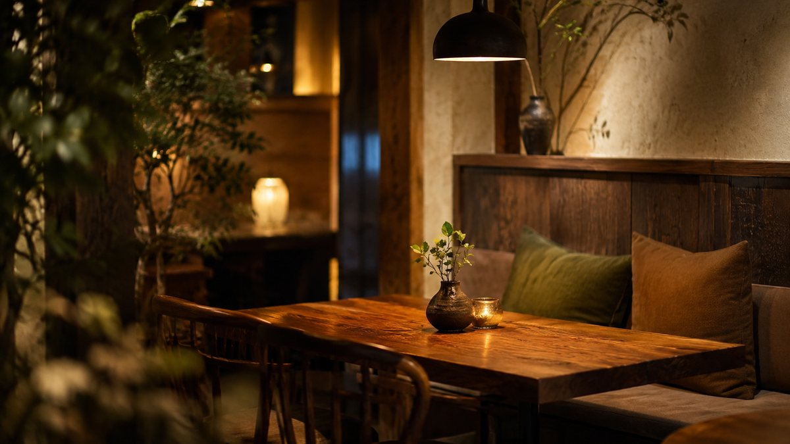
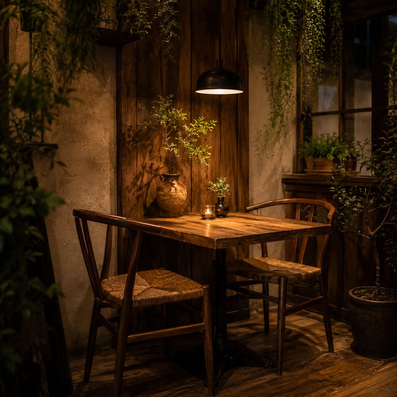
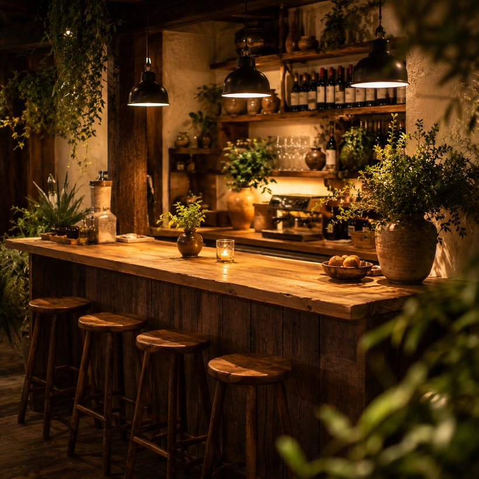

★★★★★
ランチで利用。前菜からデザートまで全部おいしくて、コスパも最高でした。お店の雰囲気もあたたかくて、また絶対に来ます。

Concept
木洩れ日のように、やさしい時間を。
木洩日（こもれび）は、昼はカフェ、夜はビストロ。 豊明の街で、旬の野菜と季節の食材を生かした洋食を、 気どらないカジュアルさでお出ししています。
派手さよりも、また来たくなる「ちょうどよさ」を。 広告に頼らず、検索とご紹介、そして口コミで 通ってくださる方に支えられてきました。
chef ─ 山田 涼介 ※サンプル。シェフ名は差し替え可
Seasonal · Honest · Unhurried
旬を、ていねいに。
皿の上の、小さな贅沢を。


Space & Seats
白木とグリーンを基調にした、明るくあたたかな店内。 ひとりのカフェタイムから、記念日のディナーまで。 シーンに合わせてお選びいただける席をご用意しています。
Voice
Googleクチコミ ★4.8（※サンプル）。信頼は、何よりの集客力。
ランチで利用。前菜からデザートまで全部おいしくて、コスパも最高でした。お店の雰囲気もあたたかくて、また絶対に来ます。
結婚記念日のディナーで利用。サプライズのプレートまで用意してくださり感激。お料理もワインも文句なし。前後駅から近いのも助かります。
自家焙煎のコーヒーとガトーショコラが絶品。ひとりでも入りやすい雰囲気で、休日の昼下がりにゆっくりできました。ごちそうさまでした。
Access
| 店名 | Bistro & Cafe 木洩日（こもれび） |
|---|---|
| 住所 | 〒470-1100 愛知県豊明市栄町0-0 ◯◯ビル1F |
| 電話 | 0562-00-0000 |
| 予算 | ランチ ¥1,500 / ディナー ¥4,000（目安） |
| アクセス | 名鉄名古屋本線「前後駅」徒歩4分／駐車場 共用5台 |
| ランチ | 11:00 - 15:00（L.O. 14:00） |
|---|---|
| ディナー | 17:30 - 22:00（L.O. 21:00） |
| 定休日 | 毎週月曜・第3火曜 |
Reservation
グルメサイト任せにせず、自社サイトから直接ご予約いただけます。
手数料に消えない分、お料理とサービスに還元を。
記念日プレート・コースのご相談もどうぞ。
0562-00-0000 受付 11:00 - 22:00 ／ 定休日 月曜
＼ 当日のお席状況は、お電話でお問い合わせください ／